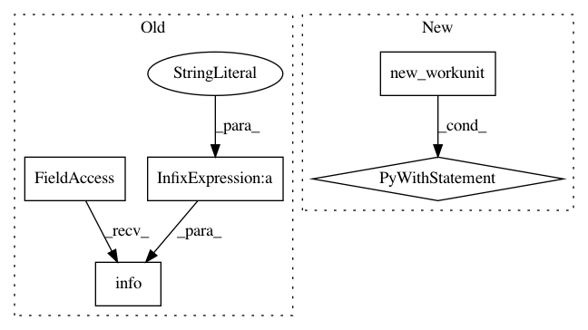

a4cb83436274d636bae946932f478e183b61bc28,src/python/twitter/pants/goal/group.py,Group,execute,#Any#Any#Any#Any#,10
Before Change
for goal in goals:
goal_chunk = filter(goal.group.predicate, chunk)
if len(goal_chunk) > 0:
context.log.info("[%s:%s:%s]" % (phase, group_name, goal.name))
execution_phases[phase].add((group_name, goal.name))
execute_task(goal.name, tasks_by_goal[goal], goal_chunk)
if getattr(context.options, "explain", None):
After Change
goal_chunk = filter(goal.group.predicate, chunk)
if len(goal_chunk) > 0:
execution_phases[phase].add((group_name, goal.name))
with context.new_workunit(name=goal.name, labels=[WorkUnit.GOAL]):
execute_task(goal.name, tasks_by_goal[goal], goal_chunk)
if getattr(context.options, "explain", None):
for phase, goals in execution_phases.items():
goal_to_task = ", ".join(expand_goal(goal) for goal in goals)
print("%s [%s]" % (phase, goal_to_task))
In pattern: SUPERPATTERN
Frequency: 3
Non-data size: 5
Instances
Project Name: pantsbuild/pants
Commit Name: a4cb83436274d636bae946932f478e183b61bc28
Time: 2013-05-17
Author: benjyw@gmail.com
File Name: src/python/twitter/pants/goal/group.py
Class Name: Group
Method Name: execute
Project Name: pantsbuild/pants
Commit Name: a4cb83436274d636bae946932f478e183b61bc28
Time: 2013-05-17
Author: benjyw@gmail.com
File Name: src/python/twitter/pants/tasks/__init__.py
Class Name: Task
Method Name: check_artifact_cache
Project Name: pantsbuild/pants
Commit Name: a4cb83436274d636bae946932f478e183b61bc28
Time: 2013-05-17
Author: benjyw@gmail.com
File Name: src/python/twitter/pants/tasks/__init__.py
Class Name: Task
Method Name: update_artifact_cache